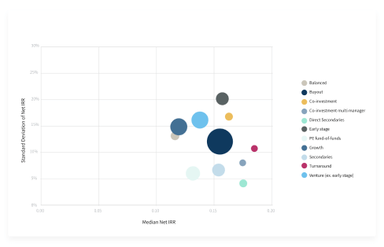
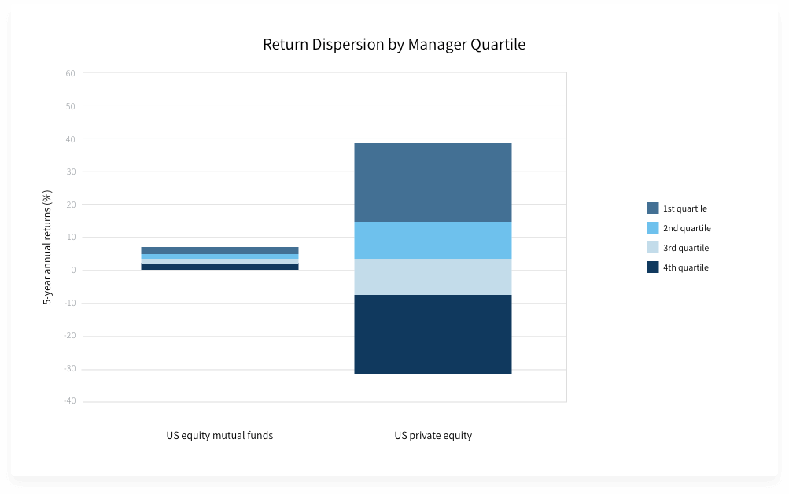
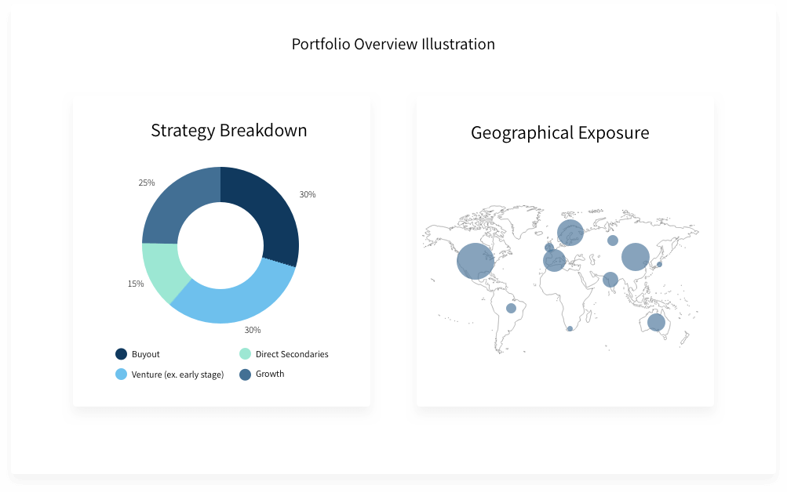
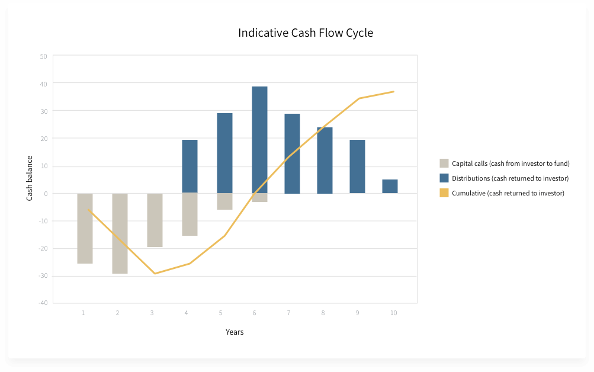

Private equity remains the largest of all private markets. Setting a clear investment strategy across sector, geography, and vintage diversification can help outstanding achieve risk-adjusted returns.
Source: Preqin, data from 2007 - 2016Private equity investing, made simple
Despite considerable interest, 99% of investors are excluded from private equity and its portfolio construction benefits due to the high minimum check sizes and onerous and complicated investment processes. Titanbay’s digital platform enables institutional investing without large ticket sizes or large fees while our unique combination of top-tier deal flow and portfolio analysis tools enables a more thoughtful allocation to private equity. We sit on our investors’ side of the table, providing unbiased access to funds and to thoughtful analysis.
Set investment strategy
Select exceptional managers
Build your allocation
Manage your portfolio
Ready to start investing?
SIGN UP1
Set investment strategy

2
Select exceptional managers
Performance dispersion in private equity remains wide in private equity, necessitating expert manager selection to find truly exceptional private equity managers. This is where we come in.
Source: Morningstar, Burgiss, data from 2013 - 2018

3
Build your allocation
With Titanbay, qualified investors can build a world-class private equity allocation according to your strategy with diversified offerings across strategy, geography, and vintage.
Source: Titanbay, for illustrative purposes only

4
Manage your portfolio
The unique nature of capital flow in private equity investments means that your exposure to the asset class changes over time. Titanbay’s tools helps investors manage your portfolios as they evolve over time.
Source: Titanbay, for illustrative purposes only

How can I invest with Titanbay?
The Titanbay investment process is split into three easy stages:
- First, qualified investors request access to the Titanbay platform. Registering on the platform is quick and secure. It will take approximately five minutes to answer a short series of questions and confirm your identity.
- Once on the platform, investors can browse private equity investments that are actively fundraising. When you’re ready to invest, subscription documents can be filled out on our site. Indicating interest in the fund can be done at any time.
- After we’ve receiving your indication of interest in a fund, Titanbay will approve (or reject) the application to invest based on the investors’ investment experience, identity verification and fund availability.
How long does it take to invest with Titanbay?
Typically, it takes 15 minutes to sign up to the platform and subscribe to a fund.
What is the minimum commitment amount?
Our digital platform enables institutional investing without large ticket sizes or large fees. Investing starts from £100,000, enabling qualified investors to build a diversified portfolio across vintages, sectors and strategies.
How does it work?
Titanbay aggregates private and institutional demand through its Luxembourg-based feeder fund structure which invests directly into underlying target funds. Operations, capital calls and distributions are managed seamlessly for investors via our digital platform.
What is the due diligence and fund selection process?
Titanbay funds are screened using a proprietary process, as well as leveraging its experienced investment advisory board which selects top-tier funds with clear criteria, and performs detailed due diligence to ensure strategic fit.
What does a typical Titanbay fund look like?
We select top-tier private equity funds which enable our investors to build a balanced private equity portfolio. Strategies vary across buy-out, growth, venture, Often, funds selected for our platform are over $1 billion in size. Always, managers selected have exceptional track records and a clearly defined investment strategy.
How do I know I'm building a balanced private equity portfolio?
Titanbay provides a sophisticated, yet easy-to-use, online portal for investors to manage investments.
Our portal includes an advanced portfolio analysis and modelling tool, giving investors an overview of their investments across strategy, geography, vintage, sector and strategy.